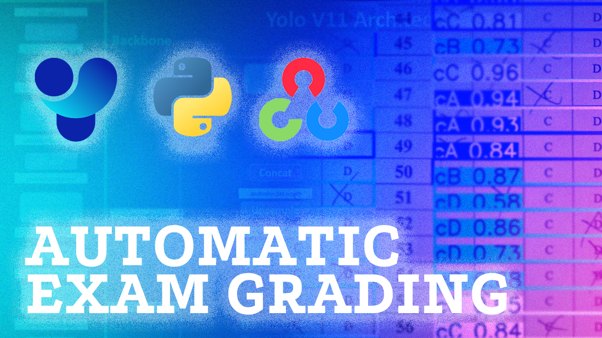

Automatic Exam Grading
Building a automatic exam grading using YOLOv8, cv2, flask

Timeline
Started
March 2025 –
Completed
May 2025
Duration
2 months
Technologies
- Python 3.8
- YOLOv8
- pytesseract
- microsoft/trocr-base-handwritten
- OpenCV
Data Sources
- Sheet Exam CTUT Dataset
- Custom collected images
- Augmented synthetic data